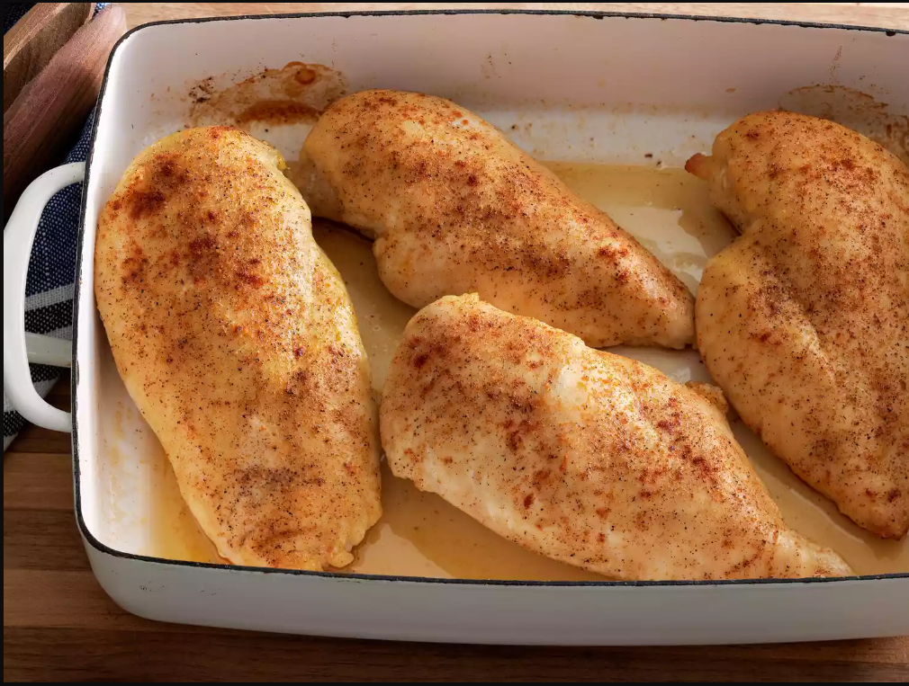

Baked Chicken Breasts

Description
Chicken Breasts
Of course, you'll need chicken breasts. This recipe calls for four skinless, boneless chicken breast halves.
Olive Oil
Olive oil provides moisture and prevents the chicken breasts from drying out. It also helps the chicken cook more evenly.
Salt
Use your favorite coarse sea salt for the most delicious results.
Creole Seasoning
Creole seasoning adds flavor and a bit of welcome heat.
Chicken Broth
You'll use chicken broth to make an easy pan sauce to pour over the baked chicken.
Ingredients
- Chicken Breasts
- Olive Oil
- Salt
- Creole Seasoning
- Chicken Broth
How to cook
- Gather all ingredients.
- Preheat the oven to 400 degrees F (200 degrees C).
- Rub chicken breasts with olive oil and sprinkle both sides with salt and Creole seasoning. Place chicken in a broiler pan.
- Bake in the preheated oven for 10 minutes. Flip chicken and cook until no longer pink in the center and the juices run clear, about 15 minutes more. An instant-read thermometer inserted into the center should read at least 165 degrees F (74 degrees C).
- Remove chicken to a plate.
- Pour chicken broth into the pan and scrape any browned bits off the bottom with a flat-edged wooden spatula. Add more broth if needed to dislodge the browned bits, but not too much or it will be watery.
- To serve, drizzle the pan sauce over the chicken.